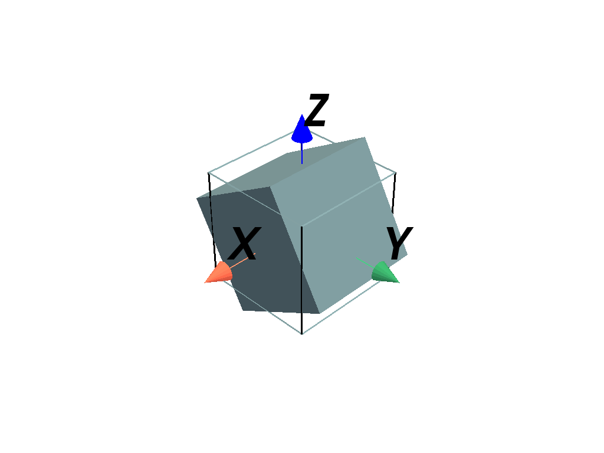

pyvista.DataSet.rotate_x#
- DataSet.rotate_x(angle: float, point: ndarray[Any, dtype[number]] | Sequence[int | float] = (0.0, 0.0, 0.0), transform_all_input_vectors: bool = False, inplace: bool = False)[ソース]#
メッシュをx軸を中心に回転します．
注釈
また，このフィルターで使われている
transform()のノートも参照してください．- パラメータ:
- 戻り値:
pyvista.DataSet回転したデータセット．
例
メッシュをx-軸で30度回転させます．
>>> import pyvista as pv >>> mesh = pv.Cube() >>> rot = mesh.rotate_x(30, inplace=False)
回転メッシュをプロットします:
>>> pl = pv.Plotter() >>> _ = pl.add_mesh(rot) >>> _ = pl.add_mesh(mesh, style='wireframe', line_width=3) >>> _ = pl.add_axes_at_origin() >>> pl.show()
